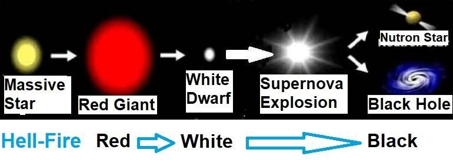

FIGURE 67.1: Stellar Evolution

চিত্র 67_1 / Figure 67_1
চিত্র 67.1: নাক্ষত্রিক বিবর্তন
চিত্র 67_1 / Figure 67_1
In Section-27 of Chapter-3, I discuss Hell in detail, where I explain how a massive star becomes a black hole at the end of its life. Every galaxy harbors a supermassive black hole at its center, which acts as the pivot of the galaxy. Thus, galaxies can be seen as objects of Hell, and the fire produced around a black hole represents the fire of Hell. A galaxy without living creatures would lose the attention of Allah. Therefore, each significant galaxy contains living beings, primarily the jinn and their supporting creatures. In addition, galaxies will have human beings as the vicegerents of God. Therefore, if one desires to own a galaxy, one may choose the path of freedom, disregarding the commands of Allah delivered through an unlettered Prophet (pbuh). If Allah finds one as a tiny big one, He would make one a real big one—He is the Creator Supreme, Ever Merciful.
অধ্যায়-3-এর ধারা-27-এ, আমি নরকে বিশদভাবে আলোচনা করেছি, যেখানে আমি ব্যাখ্যা করেছি যে কীভাবে একটি বিশাল নক্ষত্র তার জীবনের শেষে ব্ল্যাক হোলে পরিণত হয়। প্রতিটি গ্যালাক্সি তার কেন্দ্রে একটি সুপারম্যাসিভ ব্ল্যাক হোলকে আশ্রয় করে, যা গ্যালাক্সির পিভট হিসাবে কাজ করে। সুতরাং, গ্যালাক্সিগুলিকে নরকের বস্তু হিসাবে দেখা যেতে পারে এবং একটি ব্ল্যাক হোলের চারপাশে উত্পাদিত আগুন নরকের আগুনের প্রতিনিধিত্ব করে। জীবিত প্রাণী ছাড়া একটি গ্যালাক্সি আল্লাহর মনোযোগ হারাবে। অতএব, প্রতিটি গুরুত্বপূর্ণ গ্যালাক্সিতে জীবন্ত প্রাণী, প্রাথমিকভাবে জিন এবং তাদের সহায়ক প্রাণী রয়েছে। উপরন্তু, গ্যালাক্সিতে ঈশ্বরের উপাধি হিসেবে মানুষ থাকবে। অতএব, কেউ যদি একটি গ্যালাক্সির মালিক হতে চায়, তবে একজন নিরক্ষর নবী (সা.)-এর মাধ্যমে প্রদত্ত আল্লাহর আদেশকে উপেক্ষা করে স্বাধীনতার পথ বেছে নিতে পারে। আল্লাহ যদি একজনকে ছোট বড় হিসেবে দেখেন, তাহলে তিনি একজনকে সত্যিকারের বড় করে দেবেন—তিনি সৃষ্টিকর্তা সর্বশ্রেষ্ঠ, পরম করুণাময়।
―Allah created the Skies and Lands (universe) for just ends, and in order that each soul may find the recompense of what it has earned and none of them be wronged.‖ [Al Quran 54: 22]
"আল্লাহ আকাশ ও ভূমি (মহাবিশ্ব) সৃষ্টি করেছেন ঠিক শেষের জন্য, এবং যাতে প্রত্যেক ব্যক্তি তার উপার্জনের প্রতিফল পায় এবং তাদের কারও প্রতি অন্যায় না হয়।" [আল কুরআন 54:22]
―We created not the Skies and Lands and all between them (universe) merely in sport. We created them not except for just ends. But most of them do not understand. Verily, the day of sorting out is the time appointed for all of them.‖ [Al Quran 44: 38–39]
- আমরা আকাশ ও ভূমি এবং তাদের মধ্যবর্তী সবকিছুকে খেলাধুলায় সৃষ্টি করিনি। আমি তাদের সৃষ্টি করিনি কেবলমাত্র প্রান্ত ছাড়া। কিন্তু তাদের অধিকাংশই বোঝে না। প্রকৃতপক্ষে, বাছাইয়ের দিনটি তাদের সকলের জন্য নির্ধারিত সময়।'' [আল কুরআন 44: 38-39]
A person from Hell may own an entire galaxy, but he will be placed in an object within his galaxy according to the verdict of his punishment. Each galaxy, based on the degree of violence, has seven regions: 1. Haawiyah, 2. Hotamah, 3. Ladha, 4. Jaheem, 5. Sa‘eer, 6. Saqqar, 7. Jahannam. These regions are connected by seven doors and pathways of space. Though a galaxy has seven regions, one human will own a complete galaxy; there will not be a second human in that galaxy. However, there will be jinn and other universal creatures. One's goal in Hell would be to move to a less punishing object within one‘s galaxy. Therefore, one should learn to build spaceships.
জাহান্নামের একজন ব্যক্তি একটি সম্পূর্ণ গ্যালাক্সির মালিক হতে পারে, তবে তার শাস্তির রায় অনুসারে তাকে তার ছায়াপথের মধ্যে একটি বস্তুতে স্থাপন করা হবে। সহিংসতার মাত্রার উপর ভিত্তি করে প্রতিটি ছায়াপথের সাতটি অঞ্চল রয়েছে: 1. হাওইয়া, 2. হোতামাহ, 3. লাধা, 4. জাহিম, 5. সাঈর, 6. সাক্কার, 7. জাহান্নাম। এই অঞ্চলগুলি সাতটি দরজা এবং মহাকাশের পথ দ্বারা সংযুক্ত। যদিও একটি ছায়াপথের সাতটি অঞ্চল রয়েছে, একজন মানুষ একটি সম্পূর্ণ ছায়াপথের মালিক হবে; সেই গ্যালাক্সিতে দ্বিতীয় মানুষ থাকবে না। তবে জ্বীন ও অন্যান্য বিশ্বজনীন প্রাণী থাকবে। নরকে একজনের লক্ষ্য হবে তার গ্যালাক্সির মধ্যে একটি কম শাস্তিদায়ক বস্তুতে যাওয়া। অতএব, একজনকে মহাকাশযান তৈরি করা শিখতে হবে।
When they are cast therein, they will hear the drawing in of its breath, as it blazes forth; it almost burst with fury. Every time a group is cast therein, its keepers will ask, "Did no Warner come to you?" They will say, "Yes, indeed a Warner did come to us, but we rejected him and said, "God never sent down any; you are nothing but an egregious delusion!" They will further say, "Had we but listened or used our intelligence, we should not be among the companions of the blazing fire!" They will then confess their sins, but far will be (Jannaat) from the companions of the blazing fire!
যখন তাদেরকে সেখানে নিক্ষেপ করা হবে, তখন তারা তার শ্বাস-প্রশ্বাসের আওয়াজ শুনতে পাবে, যেভাবে তা প্রজ্বলিত হয়। এটা প্রায় ক্রোধ সঙ্গে ফেটে. যখনই কোন দলকে সেখানে নিক্ষেপ করা হবে, তখনই তাদের রক্ষকগণ জিজ্ঞেস করবে, তোমাদের কাছে কি কোন সতর্ককারী আসেনি? তারা বলবে, হ্যাঁ, নিশ্চয়ই আমাদের কাছে একজন সতর্ককারী এসেছিল, কিন্তু আমরা তাকে প্রত্যাখ্যান করেছিলাম এবং বলেছিলাম, 'আল্লাহ কখনো কাউকে নাযিল করেননি। আপনি একটি ভয়ঙ্কর প্রলাপ ছাড়া আর কিছুই নন!” তারা আরও বলবে, “আমরা যদি শুনতাম বা আমাদের বুদ্ধিমত্তা ব্যবহার করতাম, তাহলে আমরা জ্বলন্ত আগুনের সাথীদের অন্তর্ভুক্ত হতাম না!” তখন তারা তাদের পাপ স্বীকার করবে, কিন্তু জ্বলন্ত আগুনের সাথীদের থেকে (জান্নাত) দূরে থাকবে!
The Jannaat is a separate universe beyond this universe (Samawaat).
জান্নাত এই মহাবিশ্বের বাইরে একটি পৃথক মহাবিশ্ব (সামাওয়াত)।
As for those who fear their Lord unseen, for them is forgiveness and a great reward. And whether you hide your word or publish it, He certainly has knowledge of the secrets of hearts; should He not know—He that created? And He is the One that understands the finest mysteries is well acquainted. Section 3 of Chapter 67 [Verse 15-23]: Manageable Earth
যারা তাদের পালনকর্তাকে না দেখে ভয় করে, তাদের জন্য রয়েছে ক্ষমা ও মহা পুরস্কার। আর আপনি আপনার কথা গোপন করুন বা প্রকাশ করুন, তিনি অবশ্যই অন্তরের গোপন কথা জানেন। তিনি কি জানেন না - যিনি সৃষ্টি করেছেন? এবং তিনিই শ্রেষ্ঠতম রহস্য বোঝেন। অধ্যায় 67 এর অধ্যায় 3 [শ্লোক 15-23]: পরিচালনাযোগ্য পৃথিবী
It is He Who has made the earth manageable for you, so traverse you through its tracts and enjoy of the sustenance, which He furnishes, but unto Him is the Resurrection. Do you feel secure that He Who is in sky will not cause you to be swallowed up by the earth, and then it should quake?
তিনিই পৃথিবীকে তোমাদের জন্য পরিচালনার উপযোগী করে দিয়েছেন, সুতরাং তোমরা এর প্রদক্ষিণ কর এবং তিনি যে রিযিক প্রদান করেন তা উপভোগ কর, কিন্তু পুনরুত্থান তাঁরই কাছে। তুমি কি নিশ্চিন্ত বোধ কর যে, যিনি আকাশে আছেন তিনি তোমাকে মাটিতে গ্রাস করবেন না, অতঃপর তা কেঁপে উঠবে?
The Earth sometimes swallows up objects, such as a building, without any warning. These are known as sinkholes.
পৃথিবী কখনো কখনো কোনো সতর্কতা ছাড়াই কোনো ভবনের মতো বস্তুকে গ্রাস করে। এগুলো সিঙ্কহোল নামে পরিচিত।
67.2: A Sinkhole Above sinkhole swallowed a three-storied building and an entire intersection in Guatemala City. It is nearly 100 feet deep and 66 feet wide. The sinkholes are signs of coming earthquake.
67.2: গুয়াতেমালা সিটির একটি তিনতলা বিল্ডিং এবং একটি পুরো মোড়কে গিলে ফেলে সিঙ্কহোলের উপরে। এটি প্রায় 100 ফুট গভীর এবং 66 ফুট চওড়া। সিঙ্কহোল আসছে ভূমিকম্পের লক্ষণ।
Or do you feel secure that He Who is in the sky will not send against you a violent tornado so that you shall know how was My warning?
অথবা আপনি কি নিরাপদ বোধ করেন যে, যিনি আকাশে আছেন তিনি আপনার বিরুদ্ধে একটি প্রচণ্ড টর্নেডো পাঠাবেন না যাতে আপনি জানতে পারবেন আমার সতর্কবাণী কেমন ছিল?
Tornadoes occur in specific regions of the Earth, but no one should assume they are limited only to those regions; they can strike anywhere. In 2013, one such tornado pictured here killed 23 and injured 500 in Bangladesh.
টর্নেডো পৃথিবীর নির্দিষ্ট অঞ্চলে ঘটে, কিন্তু কেউ অনুমান করবেন না যে তারা শুধুমাত্র সেই অঞ্চলের মধ্যেই সীমাবদ্ধ; তারা যে কোন জায়গায় আঘাত করতে পারে। 2013 সালে, এখানে চিত্রিত এরকম একটি টর্নেডো বাংলাদেশে 23 জন নিহত এবং 500 জন আহত হয়েছিল।
67.3: A Tornado
67.3: একটি টর্নেডো
But indeed, men before them rejected; then how was My rejection? Do they not observe the birds above them, spreading their wings and folding them in? Nothing holds them except Most Gracious. Truly, it is He that watches over all things. Nay, who is there that can help you—an army besides Most Merciful? In nothing but delusion are the Unbelievers.
কিন্তু তাদের পূর্ববর্তী লোকেরা প্রত্যাখ্যান করেছিল। তাহলে আমার প্রত্যাখ্যান কেমন ছিল? তারা কি তাদের ওপরের পাখিদের, তাদের ডানা মেলে এবং তাদের মধ্যে ভাঁজ করে দেখে না? পরম করুণাময় ব্যতীত আর কিছুই তাদের ধরে রাখে না। প্রকৃতপক্ষে, তিনিই সবকিছুর উপর নজরদারি করেন। না, পরম করুণাময় ব্যতীত এমন কে আছে যে তোমাকে সাহায্য করবে? প্রলাপ ছাড়া আর কিছুতেই অবিশ্বাসী।
Birds fly by spreading and folding their wings, but they would not be able to fly if gravity were not holding them through their centers of gravity (CG). Without it, they would be unbalanced and thrown off course. The above verse says, ―Nothing holds them except Most Gracious‖. So, the gravity is a force of Allah designed to sustain the objects. Allah moves the Earth and the Stars. He sustains the galaxies:
পাখিরা তাদের ডানা ছড়িয়ে এবং ভাঁজ করে উড়ে, কিন্তু মাধ্যাকর্ষণ তাদের মাধ্যাকর্ষণ কেন্দ্র (সিজি) দিয়ে তাদের ধরে না রাখলে তারা উড়তে সক্ষম হবে না। এটি ছাড়া, তারা ভারসাম্যহীন হবে এবং অবশ্যই বন্ধ হয়ে যাবে। উপরের আয়াতে বলা হয়েছে, ‘পরম করুণাময় ছাড়া আর কিছুই তাদের ধরে রাখে না’। সুতরাং, মাধ্যাকর্ষণ হল আল্লাহর একটি শক্তি যা বস্তুকে টিকিয়ে রাখার জন্য ডিজাইন করা হয়েছে। আল্লাহ পৃথিবী ও নক্ষত্রকে নড়াচড়া করেন। তিনি ছায়াপথগুলিকে টিকিয়ে রাখেন:
―It is God Who alternates the Night and the Day, verily in these things is an instructive example for those who have vision!‖ [Al Quran 24:44]
"আল্লাহই রাত ও দিনের পরিবর্তন করেন, নিঃসন্দেহে এসবের মধ্যে রয়েছে দৃষ্টিশক্তিসম্পন্নদের জন্য শিক্ষণীয় উদাহরণ!" [আল কুরআন ২৪:৪৪]
―He covers the night with the day, seeking it rapidly, and the sun and the moon and the stars controlled by His deed.‖ [Al Quran 7:54]
"তিনি রাতকে দিনের দ্বারা ঢেকে দেন, দ্রুততার সাথে তালাশ করেন এবং সূর্য, চন্দ্র ও নক্ষত্রসমূহকে তাঁর কর্ম দ্বারা নিয়ন্ত্রিত করেন।" [আল কুরআন 7:54]
Who is there that can sustain trillions and trillions of stars and other objects—an army? No one can; not even an army of angels. Allah alone sustains the entire universe:
এমন কে আছে যে ট্রিলিয়ন এবং ট্রিলিয়ন তারা এবং অন্যান্য বস্তুকে ধরে রাখতে পারে—একটি সেনাবাহিনী? কেউ পারে না; এমনকি ফেরেশতাদের একটি বাহিনীও নয়। সমগ্র মহাবিশ্বকে একমাত্র আল্লাহই টিকিয়ে রেখেছেন:
“It is God Who sustains the Skies and the Lands (universe) lest they cease; and if they should fail, there is none—not one—can sustain them thereafter. Verily He is Most Forbearing, Oft- Forgiving. [Al Quran 35:41]
"আসমান ও জমিন (মহাবিশ্বকে) রক্ষণাবেক্ষণকারী আল্লাহ, পাছে তারা থেমে যায়; এবং যদি তারা ব্যর্থ হয়, তারপর কেউই তাদের টিকিয়ে রাখতে পারে না। নিশ্চয়ই তিনি পরম সহনশীল, ক্ষমাশীল।" [আল কুরআন 35:41]
Or who is there that can provide you with Sustenance if He were to withhold His provision? Nay, they obstinately persist in insolent impiety and flight. Is then one who walks headlong with his face groveling better guided, or one who walks evenly on a Straight Way? Say: ―It is He Who has created you and made for you the faculties of hearing, seeing, feeling and understanding; little thanks it is you give.‖
অথবা এমন কে আছে যে আপনাকে রিযিক দিতে পারে যদি তিনি তার রিযিক বন্ধ করে দেন? বরং তারা দৃঢ়তার সাথে অবাধ্যতা ও পলায়নপরায়ণ। অতঃপর যে ব্যক্তি মুখমন্ডল নিয়ে মাথা উঁচু করে হেঁটে চলে সে কি উত্তম পথপ্রাপ্ত, নাকি যে সরল পথে সমানভাবে হাঁটে? বলুন, তিনিই তোমাদের সৃষ্টি করেছেন এবং তোমাদের জন্য শ্রবণ, দেখার, অনুভূতি ও উপলব্ধির ক্ষমতা তৈরি করেছেন। সামান্য ধন্যবাদ এটা আপনি দিতে.'